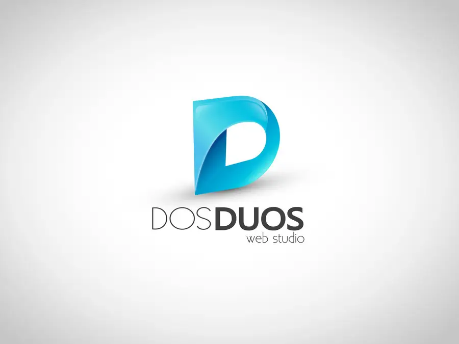
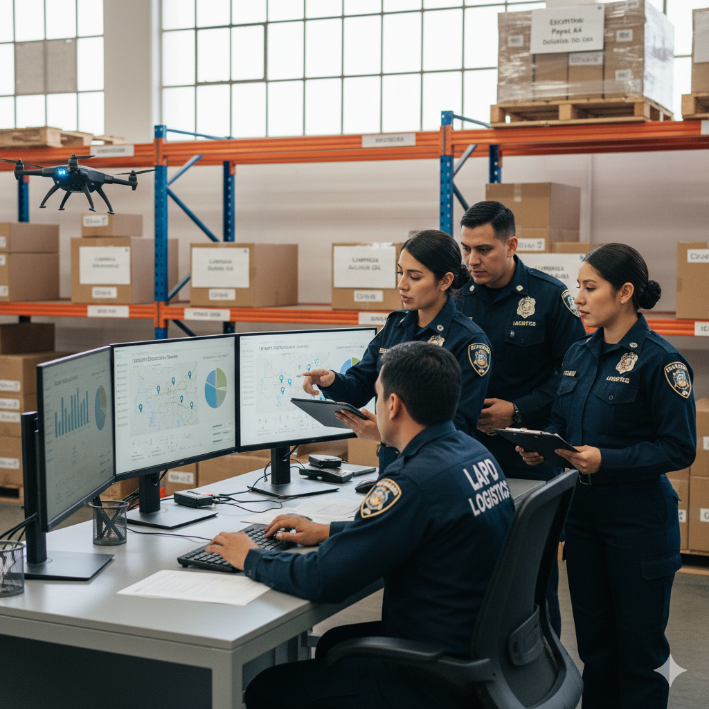
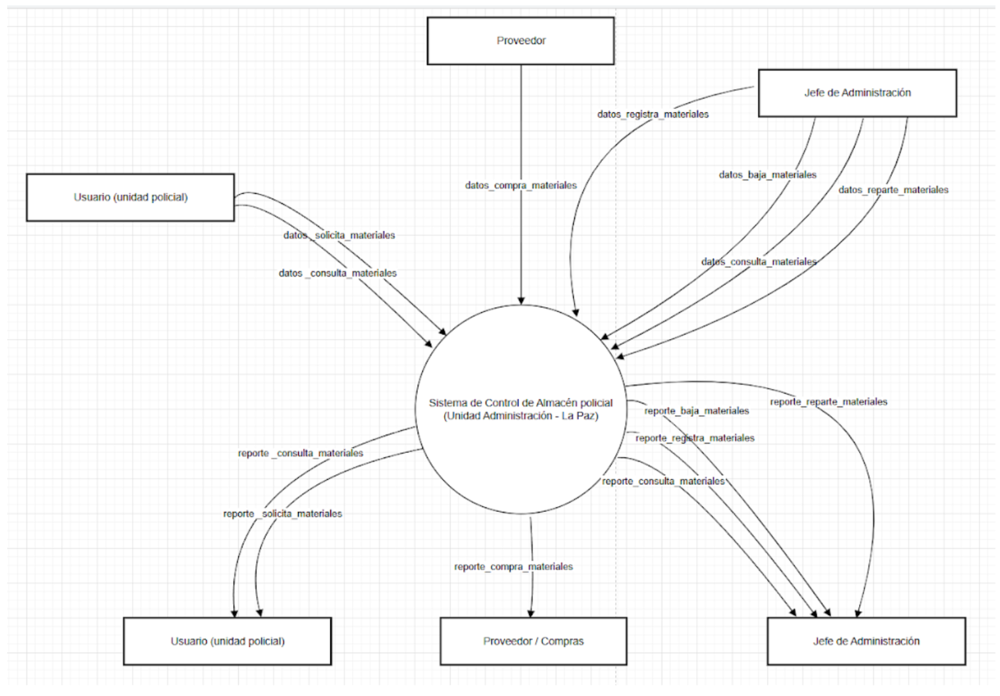
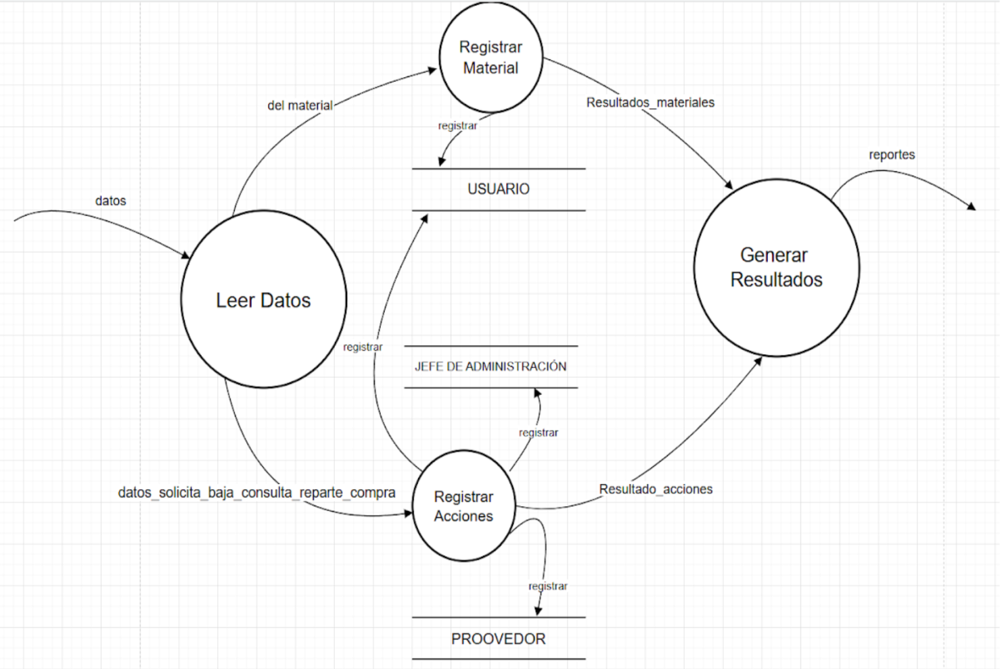
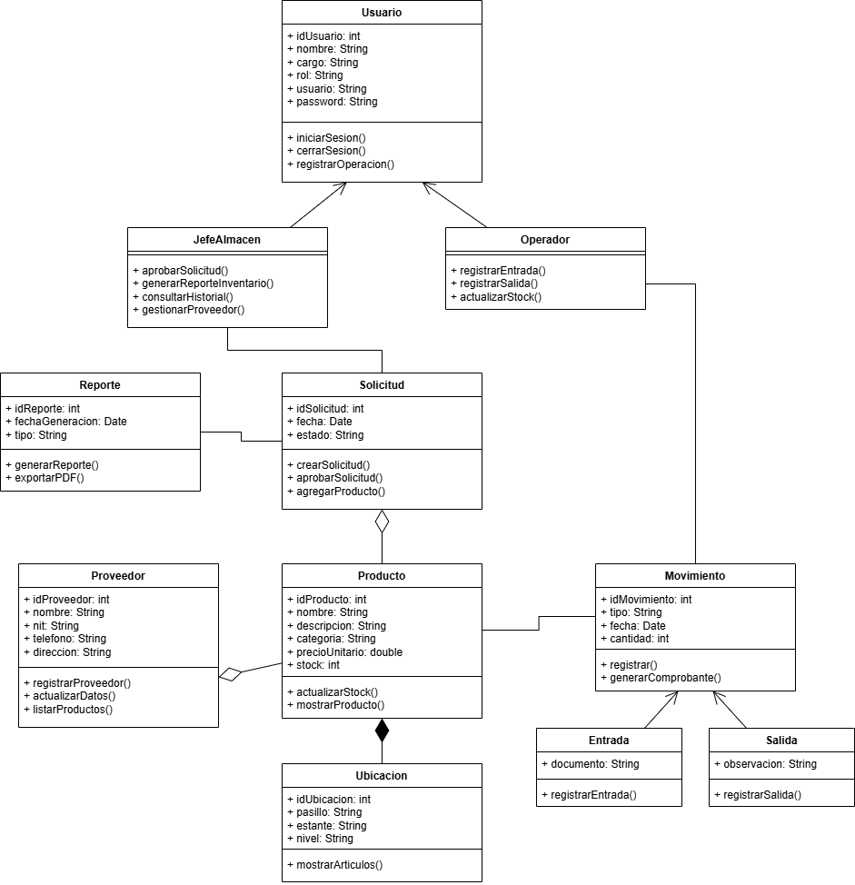

Uniformados de la verde Olivo
formando para el parte matutino
Estación de Policía de La Paz
Mejorar el ambiente de los policías
XVII Ayuntamiento de La Paz
Se encarga de administrar los asuntos locales, prestar servicios públicos esenciales.
Vehículos Policiales
Para asegurar eficiencia de la verde Olivo
El módulo principal del sistema de control de almacén fue diseñado para gestionar de manera eficiente los materiales de escritorio y limpieza de la Unidad de Administración Policial de La Paz. Este módulo centraliza los procesos de ingreso, salida y distribución de materiales a las siete unidades policiales dependientes, garantizando transparencia, control presupuestario y trazabilidad.
Su implementación permite reducir errores humanos, eliminar la duplicidad de registros y facilitar reportes automáticos sobre inventario y consumo. Además, el sistema ofrece distintos niveles de acceso (administrador, jefe de almacén y usuario), asegurando un manejo ordenado y seguro.

El sistema surge ante la necesidad de modernizar la gestión manual de materiales dentro de la Unidad de Administración Policial de La Paz. La falta de registros digitales ocasionaba pérdidas, retrasos y dificultades en el control presupuestario.
El proyecto tiene como objetivo general desarrollar un sistema informático que permita administrar los materiales de escritorio y limpieza de manera automatizada. El enfoque de investigación fue mixto, utilizando observación, entrevistas, encuestas y análisis de datos presupuestarios.
Entre los principales resultados esperados están la optimización de recursos, una distribución más equitativa, generación de reportes automáticos y la mejora de la transparencia institucional. El sistema se implementará inicialmente en la Unidad Central con posibilidad de expansión a otras regiones policiales.
Este módulo busca fomentar prácticas sostenibles dentro de la gestión del almacén policial, promoviendo el uso responsable de materiales y la reducción de desperdicios. Se propone integrar indicadores de impacto ambiental y mecanismos de reutilización de insumos cuando sea posible.

Este módulo analiza el comportamiento de los usuarios del sistema y el personal encargado del almacén. Busca mejorar la eficiencia mediante la capacitación y la motivación del personal, incentivando el uso adecuado del sistema informático y el cumplimiento de los procedimientos establecidos.

La orientación a objetos se aplica en el desarrollo del sistema para estructurar el código en clases, métodos y objetos que representan las entidades del almacén, como materiales, usuarios y reportes. Este enfoque facilita la mantenibilidad, la reutilización del código y la escalabilidad del sistema.

Aquí se insertará el video explicativo del proyecto